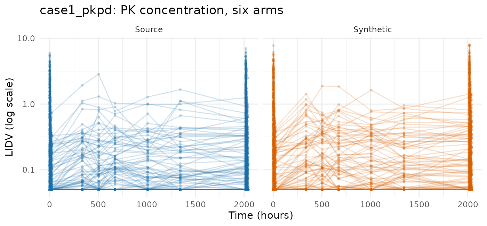
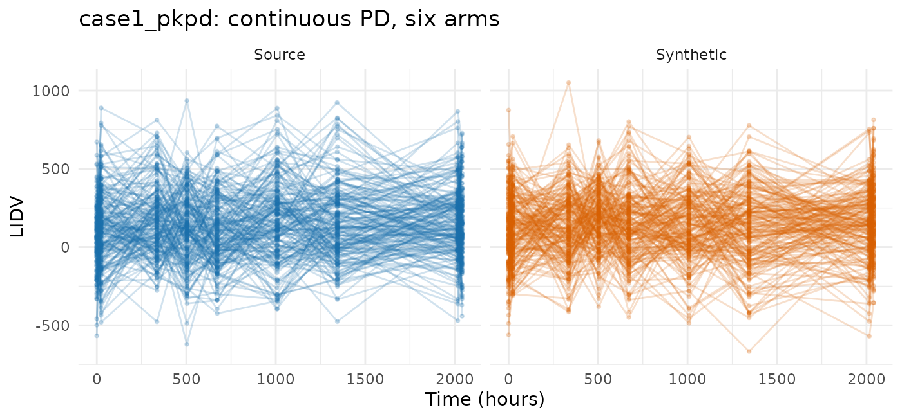
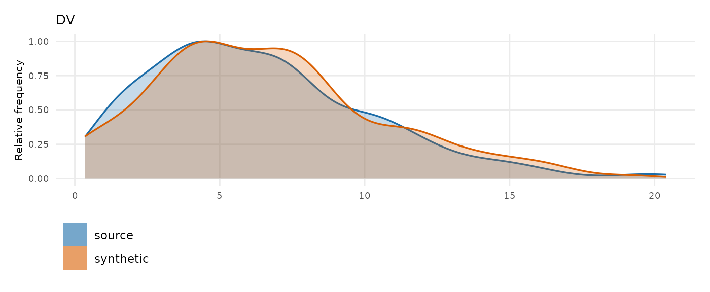
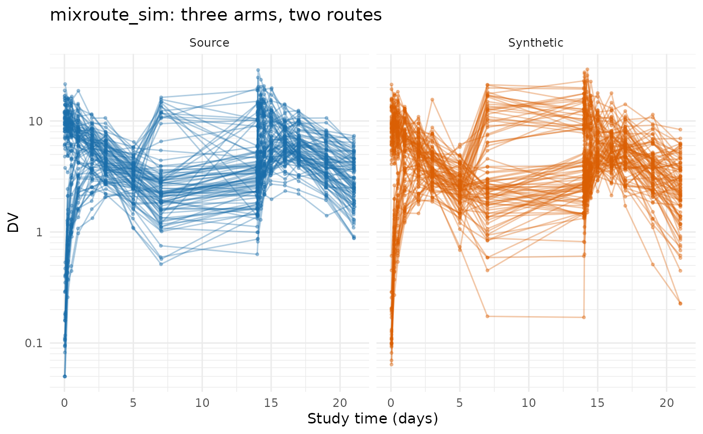
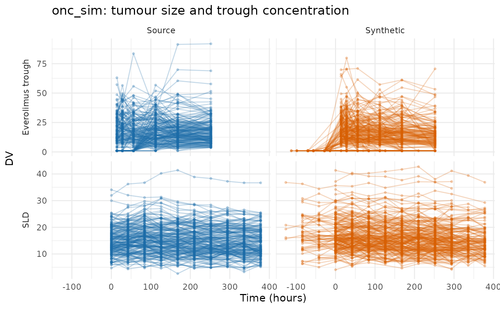

Evaluating the PMX model generator on public data
Andrew Stein
Source:vignettes/articles/pmxmodel-public-data-examples.Rmd
pmxmodel-public-data-examples.RmdThis article runs synpmx_model() over the same eight
public datasets that Evaluating
AVATAR on public data and Evaluating
PCA on public data run their generators over, so the three can be
read against each other on identical studies.
This generator asks more of a study than the other two, and what separates these datasets is whether the study can identify a population model at all. Two things it will not guess, and one it will do anyway and warn about:
-
A declared nominal grid, as
synpmx_pca()needs — the visit model is built on it. Refused, because inferring the grid is a statement about the protocol only the reader can make. -
An endpoint declaration when PK inference is
unsuitable. Concentration inference looks for absence before
dosing and scaling with dose. A response-only study can be inferred from
its positive baseline, as
wbcSimis, or declared withendpoint_roles = c(pd = "DV"). -
A cohort large enough for a covariance matrix,
which
min_subjectssets at twenty. Below it the fit runs and warns: a matrix estimated from twelve subjects describes those twelve, and whether that is fit for the purpose is a judgement about the purpose rather than about the count.
wbcSim is inferred as PD-only from its baseline.
nimoData needs its concentration named, and
pheno_sd needs that and a nominal grid built for it,
because routine care wrote none down — which is the case to read before
declaring one your study does not have. theo_md needs
nothing declared and warns about its twelve subjects.
Each dataset is attempted. A rejected population fit is shown as a refusal, with no synthetic data or scorecard. Successful fits follow the same generation and comparison steps.
Every fit below reads patient data once, through
synpmx_model_estimate(). Generation reads only the stored
fit. Comparisons and scorecards also read the source to assess the
generated data.
Plotting and reporting helpers used throughout this vignette
# Observation rows only, source beside synthetic on a shared y axis, one row per
# endpoint. The same figure the PCA survey draws, so the two can be compared
# panel for panel.
# `endpoints` draws one endpoint of a study that has several. A log axis is the
# reason it exists: `facet_grid()` puts one scale on every panel, so a study
# whose concentration wants a log axis and whose PD endpoint goes negative
# cannot be one figure.
overlay_plot <- function(source, synthetic, roles, title,
y_label = "DV", log_y = FALSE, alpha = 0.3,
max_time = Inf, endpoints = NULL) {
frame <- function(data, label) {
observed <- as.character(data[[roles$evid]]) %in% c("0", "0.0") &
!is.na(data[[roles$dv]])
if (!is.null(roles$mdv)) {
observed <- observed & as.character(data[[roles$mdv]]) %in% c("0", "0.0")
}
observed <- observed & as.numeric(data[[roles$time]]) <= max_time
data.frame(
dataset = factor(label, levels = c("Source", "Synthetic")),
subject = as.character(data[[roles$id]][observed]),
occasion = if (is.null(roles$occasion)) "1" else
as.character(data[[roles$occasion]][observed]),
time = as.numeric(data[[roles$time]][observed]),
dv = as.numeric(data[[roles$dv]][observed]),
endpoint = if (is.null(roles$dvid)) "DV" else
as.character(data[[roles$dvid]][observed]),
stringsAsFactors = FALSE
)
}
plotted <- rbind(frame(source, "Source"), frame(synthetic, "Synthetic"))
if (!is.null(endpoints)) {
plotted <- plotted[plotted$endpoint %in% endpoints, , drop = FALSE]
}
figure <- ggplot2::ggplot(
plotted,
ggplot2::aes(time, dv,
group = interaction(dataset, subject, occasion),
colour = dataset)
) +
ggplot2::geom_line(alpha = alpha) +
ggplot2::geom_point(alpha = alpha, size = 0.7) +
(if (length(unique(plotted$endpoint)) > 1L) {
ggplot2::facet_grid(endpoint ~ dataset, scales = "free_y", switch = "y")
} else {
ggplot2::facet_wrap(~dataset)
}) +
ggplot2::scale_colour_manual(values = comparison_colours) +
ggplot2::labs(x = "Time (hours)", y = y_label, title = title) +
ggplot2::theme_minimal() +
ggplot2::theme(legend.position = "none", strip.placement = "outside")
if (isTRUE(log_y)) figure + ggplot2::scale_y_log10() else figure
}
overlay_height <- function(data, roles, per_endpoint = 2.2, minimum = 3.4) {
observed <- as.character(data[[roles$evid]]) %in% c("0", "0.0")
endpoints <- if (is.null(roles$dvid)) 1L else
length(unique(data[[roles$dvid]][observed]))
max(minimum, per_endpoint * endpoints)
}
# Every dataset is run the same way and its numbers collected in one place, so
# the cross-dataset tables at the end cannot drift from the sections above them.
runs <- list()
model_run <- function(label, source, roles, file, seed) {
fit <- stored_fit(file)
synthetic <- synpmx_model_generate(fit, seed = seed)
runs[[label]] <<- list(label = label, source = source, roles = roles,
fit = fit, synthetic = synthetic,
card = synpmx_scorecard(source, synthetic, roles))
invisible(runs[[label]])
}
# Nearest-neighbour snapping onto a stated design grid, as in the PCA survey:
# which grid to snap to is a statement about the study and is written out at
# each call.
snap_to <- function(x, grid) {
grid[max.col(-abs(outer(x, grid, "-")), ties.method = "first")]
}case1_pkpd: six arms and a censored endpoint
180 patients across six treatment arms, two endpoints keyed by a
character NAME column, a baseline weight and a
CENS column. The AVATAR and PCA demos use this study; the
model demo uses mad, whose fit passed the checks.
case1_pkpd <- as.data.frame(
get(utils::data(list = "case1_pkpd", package = "xgxr"))
)
# That study's CENS is meaningful only for PK: the PD effect is signed, so a
# left-censored PD row would report a value above the uncensored ones.
case1_pkpd$CENS <- ifelse(case1_pkpd$NAME == "PD - Continuous", 0,
case1_pkpd$CENS)
case1_roles <- pmx_roles(
id = "ID", time = "TIME", dv = "LIDV", cens = "CENS", amt = "AMT",
evid = "EVID", cmt = "CMT", dvid = "NAME", nominal_time = "NOMTIME",
strata = c("TRTACT", "DOSE"), covariates = "WEIGHTB", keep = "STUDY"
)
case1_fit <- stored_fit("case1-pkpd-model-fit.rds")
case1 <- NULL
if (inherits(case1_fit, "pmx_example_rejection")) {
cat(case1_fit$message, "\n")
} else {
case1 <- model_run("case1_pkpd", case1_pkpd, case1_roles,
"case1-pkpd-model-fit.rds", seed = 808)
print(case1$fit)
}
#> A fitted PMX model, from synpmx_model_estimate()
#> Everything below is an input to `synpmx_model_generate()`.
#>
#> candidates fitted 1 (2cmt_oral selected)
#>
#> Summarized from the source, not estimated
#> cohort 180 patients in 6 arm(s)
#> Placebo / 0 (30)
#> 3 mg / 3 (30)
#> 10 mg / 10 (30)
#> 30 mg / 30 (30)
#> 100 mg / 100 (30)
#> 300 mg / 300 (30)
#> dose changes none
#> visit grid 2 endpoint(s) at 25 nominal time(s), 33 slot(s) in all
#> visit attendance median 100% of an arm attends a slot (0% to 100%)
#> covariates WEIGHTB lognormal, drawn once for the whole study,
#> independently of the profiles
#> columns emitted ID, TIME, NOMTIME, LIDV, AMT, EVID, CMT, NAME, CENS,
#> WEIGHTB, TRTACT, DOSE, STUDY
#>
#> Values at the lower limit of what was observed
#> Reported below the assay limit:
#> PK Concentration 1669 of 3600 (46%) below 0.05 (the limit)
#>
#> Each non-PK continuous endpoint, fitted as constant, linear, or exponential
#> PD - Continuous exponential
#> plateau 149
#> baseline 52.24
#> rate 0.04868
#> between-subject 0.984 (SD on the log baseline)
#> residual additive 225
#> chosen on AIC from constant, linear, exponential
#>
#> PK endpoint for the PopPK model
#> PK Concentration inferred from the following data characteristics:
#> absent before the first dose
#> dose-proportional: the peak scales with the dose
#> recorded in the compartment the doses go into
#> rises to one peak and comes back down within one
#> dose interval
#> route oral: the median profile rises to a peak at 1 before
#> declining, and 99% of subjects do too
#> sampling median 9 distinct times after a dose, 6 after the
#> peak: richer within-subject sampling
#>
#> The PopPK model
#>
#> Estimated by nlmixr2
#> structural model 2cmt_oral
#> selected by two-compartment model passed acceptance checks
#> fit checks Warning: the optimizer stalled before convergence was
#> confirmed. Check that the synthetic data reasonably
#> reproduces the source data's patterns and
#> variability.; median checked against censoring bounds;
#> spread comparison omitted for censored observations
#> fitted on 60 of 150 patients with a concentration, drawn in
#> proportion to the arms under `max_fit_subjects` = 60;
#> the dosing, visit and covariate models below read the
#> whole study
#> fixed effects cl 12.85, v 64.58, q 7.89, v2 152.9, ka 2.038
#> between-subject cl 0.479, v 0.367, ka 0.12, q 0.104, v2 0.103 (as SD on the log scale)
#> starting values cl 13, v 65, q 8, v2 150, ka 2 declared through
#> `start_param`; the rest were read off the cohort's
#> median profile
#> residual error proportional 0.311
#> time to fit 32 min 30 s
#> whole call 32 min 33 s, against 32 min 30 s in the fitter

compare_pmx_distributions(case1$source, case1$synthetic, case1_roles)
synpmx_scorecard_datatable(case1$card, report = "minimal")The stored fit uses
start_param = c(cl = 13, v = 65, q = 8, v2 = 150, ka = 2),
rounded starts from an exploratory fit of this public study. The
two-compartment fit reports false convergence. That warning remains in
the candidate table; the fit passes the parameter and generation checks
and is used for this synthetic cohort. No one-compartment fallback is
needed. vignette("pmxmodel-demo") uses mad for
the end-to-end example.
Five rows read not applicable on every card in this
article. The cards below count them in their tally and do not list them,
so they are worth reading once here. B1a, B1b and C2 need a run record
that synpmx_avatar() writes and this generator does not.
B4a asks whether a generated set of observation times copies a real one,
which is a disclosure question only where the set was taken from
somebody: this generator decides each visit independently from a per-arm
probability, so a match is a coincidence with a computable chance. B2
asks whether a synthetic patient stands out from its stratum, which is a
disclosure question for a generator that hands a real patient’s
trajectory to an avatar and a reading about the tail of a distribution
here. B4b is the row that carries the claim here, and it is 0 on
every dataset below: no value any patient measured is
reproduced.
mad: five endpoints, only one of them a concentration
60 subjects in a multiple-ascending-dose study with a declared
NOMTIME and five endpoints — PK concentration, continuous
PD, and ordinal, count and binary PD. The generator fits a structural
model to the concentration and a shape to each continuous PD endpoint;
the discrete ones are a question this generator does not answer.
mad <- as.data.frame(get(utils::data(list = "mad", package = "xgxr")))
mad_roles <- pmx_roles(
id = "ID", time = "TIME", dv = "LIDV", amt = "AMT", evid = "EVID",
cmt = "CMT", dvid = "NAME", mdv = "MDV", nominal_time = "NOMTIME",
strata = c("TRTACT", "DOSE"), covariates = c("WEIGHTB", "SEX")
)
mad_run <- model_run("mad", mad, mad_roles, "mad-model-fit.rds", seed = 909)
mad_run$fit
#> A fitted PMX model, from synpmx_model_estimate()
#> Everything below is an input to `synpmx_model_generate()`.
#>
#> candidates fitted 1 (2cmt_oral selected)
#>
#> Summarized from the source, not estimated
#> cohort 60 patients in 6 arm(s)
#> Placebo / 0 (10)
#> 100 mg / 100 (10)
#> 200 mg / 200 (10)
#> 400 mg / 400 (10)
#> 800 mg / 800 (10)
#> 1600 mg / 1600 (10)
#> dose changes none
#> visit grid 5 endpoint(s) at 28 nominal time(s), 66 slot(s) in all
#> visit attendance median 100% of an arm attends a slot (0% to 100%)
#> covariates WEIGHTB lognormal, SEX categorical, drawn once for the
#> whole study, independently of the profiles
#> discrete endpoints PD - Binary, PD - Ordinal: drawn from each arm's
#> recorded frequencies at each visit, not simulated
#> columns emitted ID, TIME, NOMTIME, LIDV, AMT, EVID, CMT, NAME, MDV,
#> WEIGHTB, SEX, TRTACT, DOSE
#>
#> Values at the lower limit of what was observed
#> PK Concentration 0.025, half the smallest value seen, no assay limit
#> PD - Continuous 0.0825, half the smallest value seen, no assay limit
#>
#> Each non-PK continuous endpoint, fitted as constant, linear, or exponential
#> PD - Continuous exponential
#> plateau 31.47
#> baseline 1.637
#> rate 0.01344
#> between-subject 1.33 (SD on the log baseline)
#> residual additive 8.13
#> chosen on AIC from constant, linear, exponential
#> PD - Count exponential
#> plateau 2.888
#> baseline 10.38
#> rate 0.01484
#> between-subject 0.248 (SD on the log baseline)
#> residual additive 2.78
#> chosen on AIC from constant, linear, exponential
#>
#> PK endpoint for the PopPK model
#> PK Concentration inferred from the following data characteristics:
#> absent before the first dose
#> dose-proportional: the peak scales with the dose
#> recorded in the compartment the doses go into
#> rises to one peak and comes back down within one
#> dose interval
#> route oral: the median profile rises to a peak at 2 before
#> declining, and 100% of subjects do too
#> sampling median 13 distinct times after a dose, 9 after the
#> peak: richer within-subject sampling
#>
#> The PopPK model
#>
#> Estimated by nlmixr2
#> structural model 2cmt_oral
#> selected by two-compartment model passed acceptance checks
#> fitted on all 50 patients with a concentration
#> fixed effects cl 6.254, v 48.55, q 4.871, v2 147, ka 1.208
#> between-subject cl 0.42, v 0.445, ka 0.372, q 0.534, v2 0.424 (as SD on the log scale)
#> residual error proportional 0.372
#> time to fit 5 min 42 s
#> whole call 5 min 43 s, against 5 min 42 s in the fitter
synpmx_scorecard_datatable(mad_run$card, report = "minimal")Nothing fails, and A3 reads 5 of 5: every endpoint survives, including the three discrete ones, which are drawn from the level frequencies their arm holds at each visit rather than modelled. D1 is the only row to read, and the variable it names is now the concentration, whose synthetic spread runs a little narrower than the source’s.
This is also the study that found a defect: a visit where every patient recorded the same level of an ordinal endpoint left the draw with a single level, and the draw read that level as a count of levels rather than as the level itself. Fixed, and pinned by a regression test.
warfarin: a single dose, and no dose levels to compare
32 subjects, a single oral dose, a PK endpoint (cp) and
a PD one (pca) on different time courses. Its 16 recorded
observation times are the protocol’s, so declaring
nominal_time from time states something true
about this study rather than constructing a grid.
data("warfarin", package = "nlmixr2data")
warfarin <- as.data.frame(warfarin)
warfarin$ntime <- warfarin$time
warfarin_roles <- pmx_roles(
id = "id", time = "time", nominal_time = "ntime", dv = "dv", amt = "amt",
evid = "evid", dvid = "dvid", covariates = c("wt", "age", "sex")
)
warfarin_run <- model_run("warfarin", warfarin, warfarin_roles,
"warfarin-model-fit.rds", seed = 404)
model_report(warfarin_run$fit)
#> Summarized from the source, not estimated
#> cohort 32 patients in 1 arm(s)
#> all (32)
#> dose changes none
#> visit grid 2 endpoint(s) at 16 nominal time(s), 22 slot(s) in all
#> visit attendance median 95% of an arm attends a slot (9% to 100%)
#> covariates wt lognormal, age lognormal, sex categorical, drawn
#> once for the whole study, independently of the
#> profiles
#> columns emitted id, time, ntime, dv, amt, evid, dvid, wt, age, sex
#>
#> Values at the lower limit of what was observed
#> cp 0.3, half the smallest value seen, no assay limit
#> pca 4.5, half the smallest value seen, no assay limit
#>
#> Each non-PK continuous endpoint, fitted as constant, linear, or exponential
#> pca exponential
#> plateau 27.34
#> baseline 96.3
#> rate 0.09877
#> between-subject 0.146 (SD on the log baseline)
#> residual additive 12.4
#> chosen on AIC from constant, linear, exponential
#>
#> PK endpoint for the PopPK model
#> cp inferred from the following data characteristics:
#> absent before the first dose
#> rises to one peak and comes back down within one
#> dose interval
#> route oral: the median profile rises to a peak at 9 before
#> declining, and 31% of subjects do too
#> sampling median 6 distinct times after a dose, 6 after the
#> peak: sparse within-subject sampling
#>
#> The PopPK model
#>
#> Estimated by nlmixr2
#> structural model 2cmt_oral
#> selected by two-compartment model passed acceptance checks
#> fitted on all 32 patients with a concentration
#> fixed effects cl 0.1314, v 6.574, q 0.09833, v2 1.562, ka 0.4206
#> between-subject cl 0.268, v 0.192, ka 0.555, q 0.0746, v2 0.638 (as SD on the log scale)
#> residual error proportional 0.206
#> time to fit 51.8 s
#> whole call 52.0 s, against 51.8 s in the fitter
compare_pmx_distributions(warfarin_run$source, warfarin_run$synthetic,
warfarin_roles)
synpmx_scorecard_datatable(warfarin_run$card, report = "minimal")Read the design line in the report above rather than the parameters.
It says the median profile peaks at 9 h and that 31% of subjects
do too — 22 of the 32 are first sampled at 24 h, well past the
peak, so most individual profiles only decline. The route was decided
from the pooled median rather than by a per-subject vote for exactly
that reason, and the low percentage is the fit telling you how much it
had to go on. proportional reads NA for the
same kind of reason: every patient gets the same dose, so there are no
dose levels to compare and the residual error falls back to
additive.
Nothing fails; D1 at 1.2 times the source’s spread on cp
is the only row to read. The concentration panel of the figure is the
generator at its best on this survey — the shape, the spread and the
decline all land.
The pca panel below it is the generator at its
documented limit. The source’s prothrombin activity falls to a nadir and
comes back: median 100, 32, 18, 22, 35 over the first 12 hours, then to
36, 60, 100 and beyond 100 hours. The synthetic reads 91, 31, 28, 29, 30
— it falls and then flattens. The PD shapes are constant, linear and
exponential fitted to the pooled observations, and none of the three can
come back up.
wbcSim: an infusion and a delayed response
45 subjects with infusion start/stop pairs and a delayed white-blood-cell decline, nadir and recovery. The concentration this generator looks for is not here: what is recorded is the response.
data("wbcSim", package = "nlmixr2data")
wbcSim <- as.data.frame(wbcSim)
wbcSim$NTIME <- wbcSim$TIME
wbc_roles <- pmx_roles(
id = "ID", time = "TIME", nominal_time = "NTIME", dv = "DV", amt = "AMT",
evid = "EVID", cmt = "CMT", rate = "RATE"
)
# The positive baseline identifies this as a PD-only study.
wbc_run <- model_run("wbcSim", wbcSim, wbc_roles, "wbcsim-model-fit.rds",
seed = 505)
print(model_report(wbc_run$fit))
#> Summarized from the source, not estimated
#> cohort 45 patients in 1 arm(s)
#> all (45)
#> dose routes one route, undeclared; infused over 1 h
#> dose changes none
#> visit grid 1 endpoint(s) at 11 nominal time(s), 11 slot(s) in all
#> visit attendance median 11% of an arm attends a slot (7% to 100%)
#> columns emitted ID, TIME, NTIME, DV, AMT, EVID, CMT, RATE
#>
#> Values at the lower limit of what was observed
#> DV 0.35, half the smallest value seen, no assay limit
#>
#> Each non-PK continuous endpoint, fitted as constant, linear, or exponential
#> DV linear
#> baseline 6.967
#> slope -0.001192
#> between-subject 0.342 (SD on the log baseline)
#> residual additive 3.01
#> chosen on AIC from constant, linear
#>
#> PD-only study: no PK model fitted. Responses use study-time shapes or visit frequencies.
#> whole call 0.4 s, against 0.0 s in the fitter
compare_pmx_distributions(wbc_run$source, wbc_run$synthetic, wbc_roles)
synpmx_scorecard_datatable(wbc_run$card, report = "minimal")The positive first-dose baseline identifies this as a PD-only study. No compartment model is attempted. The report shows the response’s time-course fit and its residual variation, alongside the infusion and visit summaries.
The available PD shapes cannot reproduce a decline followed by recovery. Accepting a PD-only study makes the endpoint classification correct; it does not make this simple time-course catalogue a cell-turnover model. Read the source-versus-synthetic plot for that missing shape.
mavoglurant: an occasion-reset clock
120 subjects in one- and two-period profiles, with TIME
resetting inside OCC so it is already dose-relative. The
grid is the one the PCA survey writes down, reused unchanged.
data("mavoglurant", package = "nlmixr2data")
mavoglurant <- as.data.frame(mavoglurant)
mavo_design <- c(0, 0.25, 0.5, 0.75, 1, 1.5, 2, 3, 4, 6, 8, 10, 12, 24, 36, 48)
mavoglurant$NTIME <- ifelse(mavoglurant$EVID == 0,
snap_to(mavoglurant$TIME, mavo_design),
mavoglurant$TIME)
mavo_roles <- pmx_roles(
id = "ID", time = "TIME", nominal_time = "NTIME", dv = "DV", amt = "AMT",
evid = "EVID", cmt = "CMT", rate = "RATE", mdv = "MDV", occasion = "OCC",
keep = "DOSE", covariates = c("AGE", "SEX", "WT", "HT")
)
mavo_run <- model_run("mavoglurant", mavoglurant, mavo_roles,
"mavoglurant-model-fit.rds", seed = 707)
mavo_run$fit
#> A fitted PMX model, from synpmx_model_estimate()
#> Everything below is an input to `synpmx_model_generate()`.
#>
#> candidates fitted 1 (2cmt_infusion selected)
#>
#> Summarized from the source, not estimated
#> cohort 120 patients in 1 arm(s)
#> all (120)
#> dose routes one route, undeclared; infused over 0.1667 h
#> dose changes none
#> visit grid 1 endpoint(s) at 14 nominal time(s), 14 slot(s) in all
#> visit attendance median 100% of an arm attends a slot (6% to 100%)
#> covariates AGE lognormal, SEX lognormal, WT lognormal, HT
#> lognormal, drawn once for the whole study,
#> independently of the profiles
#> columns emitted ID, TIME, NTIME, OCC, DV, AMT, EVID, CMT, MDV, RATE,
#> AGE, SEX, WT, HT, DOSE
#>
#> Values at the lower limit of what was observed
#> DV 1.005, half the smallest value seen, no assay limit
#>
#> PK endpoint for the PopPK model
#> DV inferred from the following data characteristics:
#> absent before the first dose
#> dose-proportional: the peak scales with the dose
#> recorded in the compartment the doses go into
#> rises to one peak and comes back down within one
#> dose interval
#> route infusion: a nonzero `rate` on the dose records
#> sampling median 11 distinct times after a dose, 10 after the
#> peak: richer within-subject sampling
#>
#> The PopPK model
#>
#> Estimated by nlmixr2
#> structural model 2cmt_infusion
#> selected by two-compartment model passed acceptance checks
#> fitted on 60 of 120 patients with a concentration, drawn in
#> proportion to the arms under `max_fit_subjects` = 60;
#> the dosing, visit and covariate models below read the
#> whole study
#> fixed effects cl 0.04492, v 0.09593, q 0.04834, v2 0.2407
#> between-subject cl 0.381, v 0.394, q 0.375, v2 0.407 (as SD on the log scale)
#> residual error proportional 0.339
#> time to fit 1 min 3 s
#> whole call 1 min 4 s, against 1 min 3 s in the fitter
synpmx_scorecard_datatable(mavo_run$card, report = "minimal")Three rows to read, and two findings. A5b reports occasions per
patient falling from 1.65 to 1 and A5a observations per patient from
20.2 to 11.3: mavoglurant is one- and two-period, and the
dosing model carries one planned schedule per arm, so the patients who
had a second period do not get it back. A study whose periods matter
needs them declared as arms, or a generator that keeps each patient’s
own schedule.
The second finding used to be in the figure rather than the card, and
this is the study that closed it. The source’s profiles are a tight
declining band, the synthetic ones scattered across it, and a line of
values sat on the assay floor. The cause was the candidate set. A
rate role makes this an infusion study, and the closed-form
set held two compartments for a bolus and for an oral dose and not for
an infusion — so a drug with an obvious distribution phase was fitted a
one-compartment model, which took a proportional residual of 0.72 and
wrote that scatter into every generated value.
2cmt_infusion is now in the set and tried first by default.
The report above gives the accepted model, its residual error, and any
fallback reason.
The scorecard moves less than the fit does. D1 still reads a synthetic spread well below the source’s, and A5a and A5b do not move at all, because what they measure is the visit and dosing models rather than the structural one. A better-fitting structural model is a fit-quality argument here rather than a scorecard one.
theo_md: twelve subjects, which is below the floor
12 subjects, seven doses exactly 24 h apart, dense sampling around the first and last dose. The grid is constructible and the endpoint is a concentration, so nothing stands between this study and a fit except the cohort size — and that is a warning rather than a refusal.
data("theo_md", package = "nlmixr2data")
theo_md <- as.data.frame(theo_md)
theo_doses <- seq(0, 144, by = 24)
theo_samples <- c(0, 0.25, 0.5, 1, 2, 3, 4, 5, 7, 9, 12, 24)
interval <- pmax(1L, findInterval(theo_md$TIME, theo_doses))
theo_md$NTIME <- ifelse(
theo_md$EVID == 0,
theo_doses[interval] +
snap_to(theo_md$TIME - theo_doses[interval], theo_samples),
theo_md$TIME
)
theo_roles <- pmx_roles(
id = "ID", time = "TIME", nominal_time = "NTIME", dv = "DV", amt = "AMT",
evid = "EVID", cmt = "CMT", covariates = "WT"
)synpmx_model_estimate(theo_md, theo_roles, seed = 1)
fits, and says what it is doing on the way past:
synpmx_model_estimate()is fitting a population model to 12 subjects, belowmin_subjects= 20. The fixed effects and the covariance matrix describe those 12 subjects rather than a population, and nothing downstream will tell you so: the scorecard asks whether the output copies anybody or changed the study’s shape, and a small-cohort fit does neither.
The floor is an argument rather than a constant, so
min_subjects = 12L says the consequence is understood and
silences it. That is what the stored fit below was built with, and what
it costs is stated in the row it fills in the closing tables: a
covariance matrix estimated from twelve subjects describes those
twelve.
theo_run <- model_run("theo_md", theo_md, theo_roles, "theo-md-model-fit.rds",
seed = 303)
theo_run$fit
#> A fitted PMX model, from synpmx_model_estimate()
#> Everything below is an input to `synpmx_model_generate()`.
#>
#> candidates fitted 1 (2cmt_oral selected)
#>
#> Summarized from the source, not estimated
#> cohort 12 patients in 1 arm(s)
#> all (12)
#> dose changes none
#> visit grid 1 endpoint(s) at 25 nominal time(s), 25 slot(s) in all
#> visit attendance median 100% of an arm attends a slot (33% to 100%)
#> covariates WT lognormal, drawn once for the whole study,
#> independently of the profiles
#> columns emitted ID, TIME, NTIME, DV, AMT, EVID, CMT, WT
#>
#> Values at the lower limit of what was observed
#> DV 0.075, half the smallest value seen, no assay limit
#>
#> PK endpoint for the PopPK model
#> DV inferred from the following data characteristics:
#> absent before the first dose
#> recorded in the compartment the doses go into
#> rises to one peak and comes back down within one
#> dose interval
#> route oral: the median profile rises to a peak at 2 before
#> declining, and 100% of subjects do too
#> sampling median 11 distinct times after a dose, 6 after the
#> peak: richer within-subject sampling
#>
#> The PopPK model
#>
#> Estimated by nlmixr2
#> structural model 2cmt_oral
#> selected by two-compartment model passed acceptance checks
#> fit checks Warning: the optimizer stalled before convergence was
#> confirmed. Check that the synthetic data reasonably
#> reproduces the source data's patterns and variability.
#> fitted on all 12 patients with a concentration
#> fixed effects cl 2.811, v 29.43, q 1.916, v2 4.204, ka 1.233
#> between-subject cl 0.191, v 0.14, ka 0.517, q 0.237, v2 0.274 (as SD on the log scale)
#> residual error proportional 0.216
#> time to fit 1 min 18 s
#> whole call 1 min 18 s, against 1 min 18 s in the fitter
synpmx_scorecard_datatable(theo_run$card, report = "minimal")Nothing fails, and the card looks like the others. That is the uncomfortable part: the scorecard cannot see that a covariance matrix came from twelve subjects, because the question it asks is whether this output copies anybody or changed the study’s shape, and a twelve-subject fit does neither. The floor exists because nothing downstream of it can tell.
nimoData: the endpoint has to be named
12 subjects, ten roughly weekly infusions, with dose times recorded
as actuals. The grid construction is the one the AVATAR and PCA surveys
work out, reused unchanged. Its twelve subjects draw the same warning
theo_md did, and then it is refused for a reason worth
reading.
data("nimoData", package = "nlmixr2data")
nimoData <- as.data.frame(nimoData)
nimo_interval <- 168
last_occasion <- ave(nimoData$OCC, nimoData$ID, FUN = max)
nominal_tad <- round(nimoData$TAD / 24) * 24
pre_dose <- nimoData$EVID == 0 & nominal_tad >= nimo_interval &
nimoData$OCC < last_occasion
nominal_tad[pre_dose] <- nimo_interval - 1
nimoData$NTIME <- (nimoData$OCC - 1) * nimo_interval +
ifelse(nimoData$EVID == 0, nominal_tad, 0)
nimo_roles <- pmx_roles(
id = "ID", time = "TIME", nominal_time = "NTIME", dv = "DV", amt = "AMT",
evid = "EVID", rate = "RATE", mdv = "MDV", tad = "TAD", occasion = "OCC",
covariates = c("BSA", "AGE", "HGT"), keep = "DOS"
)
synpmx_model_estimate(nimoData, nimo_roles, seed = 1, min_subjects = 12L)
#> Error:
#> ! No endpoint looks like a drug concentration: none is both absent before the
#> first dose and dose-proportional.
#> Signals read: DV (post-dose yes, proportional no)
#> Fix: Name the concentration with `endpoint_roles = c(pk = "...")`, or use
#> `synpmx_avatar()` or `synpmx_pca()`, which fit no structural model. For
#> a PD-only study, declare `endpoint_roles = c(pd = "...")`.Every subject in nimoData receives the same dose, so
there are no dose levels to compare and nothing in the table says this
endpoint scales with dose. The detection fails closed rather than
assuming, and the refusal is the generator declining to make that
statement on your behalf.
DV here is a concentration, and saying so is a
statement about the assay that only the reader can make. With that
declaration and the floor lowered, the study fits in about four
seconds.
nimo_fit <- synpmx_model_estimate(nimoData, nimo_roles, seed = 1,
min_subjects = 12L,
endpoint_roles = c(pk = "DV"))
nimo_run <- model_run("nimoData", nimoData, nimo_roles, "nimo-model-fit.rds",
seed = 606)
nimo_run$fit
#> A fitted PMX model, from synpmx_model_estimate()
#> Everything below is an input to `synpmx_model_generate()`.
#>
#> candidates fitted 1 (2cmt_infusion selected)
#>
#> Summarized from the source, not estimated
#> cohort 12 patients in 1 arm(s)
#> all (12)
#> dose routes one route, undeclared; infused over 0.1 to 1 h
#> dose changes none
#> visit grid 1 endpoint(s) at 31 nominal time(s), 31 slot(s) in all
#> visit attendance median 100% of an arm attends a slot (25% to 100%)
#> covariates BSA lognormal, AGE lognormal, HGT lognormal, drawn
#> once for the whole study, independently of the
#> profiles
#> columns emitted ID, TIME, NTIME, TAD, OCC, DV, AMT, EVID, MDV, RATE,
#> BSA, AGE, HGT, DOS
#>
#> Values at the lower limit of what was observed
#> DV 0.1323, half the smallest value seen, no assay limit
#>
#> PK endpoint for the PopPK model
#> DV declared through `endpoint_roles`
#> route infusion: a nonzero `rate` on the dose records
#> sampling median 6 distinct times after a dose, 5 after the
#> peak: richer within-subject sampling
#>
#> The PopPK model
#>
#> Estimated by nlmixr2
#> structural model 2cmt_infusion
#> selected by two-compartment model passed acceptance checks
#> fit checks generated/source interquartile-range ratio 3.08
#> fitted on all 12 patients with a concentration
#> fixed effects cl 0.06493, v 35.44, q 0.09515, v2 323.4
#> between-subject cl 0.707, v 0.7, q 0.589, v2 0.431 (as SD on the log scale)
#> residual error proportional 0.421
#> time to fit 58.0 s
#> whole call 58.2 s, against 58.0 s in the fitter
synpmx_scorecard_datatable(nimo_run$card, report = "minimal")The generation screen warns that the simulated interquartile range is more than twice the source’s. The fit remains accepted: this is a spread warning, not a gross failure that triggers one-compartment fallback. D1 and the plot show the wider synthetic distribution. With only twelve subjects, the estimated population variability also has limited support; passing the checks does not make that variability precise.
nimoData is also the study that shows the other reading
the fit has to make. It reports one negative concentration in
321 — what an assay returns for a sample near its limit — and a
single row is not evidence that this endpoint reaches zero. Treating it
as evidence would fit an additive residual to values whose median is 3,
and the generated troughs would land on zero. It is substituted at half
the smallest positive value the study reports, the fit says so as it
happens, and the proportional residual stands.
pheno_sd: the grid has to be built, not declared
59 neonates on phenobarbital in routine care, with individualised
dosing and sparse irregular sampling: 155 observations at 118 distinct
times, about two and a half per baby. The concentration test fails here
for the same reason it fails on nimoData — the doses are
individualised rather than assigned, so nothing reads as
dose-proportional.
data("pheno_sd", package = "nlmixr2data")
pheno_sd <- as.data.frame(pheno_sd)
pheno_flat <- pheno_sd
pheno_flat$NTIME <- pheno_flat$TIME # a declaration this study cannot support
pheno_roles <- pmx_roles(
id = "ID", time = "TIME", nominal_time = "NTIME", dv = "DV", amt = "AMT",
evid = "EVID", mdv = "MDV", covariates = c("WT", "APGR")
)
synpmx_model_estimate(pheno_flat, pheno_roles, seed = 1)
#> Error:
#> ! No endpoint looks like a drug concentration: none is both absent before the
#> first dose and dose-proportional.
#> Signals read: DV (post-dose yes, proportional no)
#> Fix: Name the concentration with `endpoint_roles = c(pk = "...")`, or use
#> `synpmx_avatar()` or `synpmx_pca()`, which fit no structural model. For
#> a PD-only study, declare `endpoint_roles = c(pd = "...")`.Name the endpoint and it fits. Nothing in the generator’s own
requirements stops this study — and with NTIME set to
TIME the output is still nearly empty.
pheno_flat_fit <- stored_fit("pheno-flat-model-fit.rds")
pheno_flat_synthetic <- synpmx_model_generate(pheno_flat_fit, seed = 707)
#> Warning: 65% of generated observations (15 of 23) fell below the smallest value the
#> study reported and were raised to half of it.
#> A floor catching this much is a fitted model that does not describe the
#> low end of the data, not an assay limit.
#> Fix: Read `model_report()` before using this dataset.
c(distinct_times = length(unique(pheno_sd$TIME[pheno_sd$EVID == 0])),
grid_cells = nrow(pheno_flat_fit$cells),
source_obs_per_patient = round(sum(pheno_sd$EVID == 0) /
length(unique(pheno_sd$ID)), 2),
synthetic_obs_per_patient = round(
sum(pheno_flat_synthetic$EVID == 0) /
length(unique(pheno_flat_synthetic$ID)), 2))
#> distinct_times grid_cells source_obs_per_patient
#> 118.00 5.00 2.63
#> synthetic_obs_per_patient
#> 0.44118 distinct recorded times become a handful of grid cells. A cell has to be reached by enough patients to be a visit rather than one baby’s afternoon, and one clock reading per patient clears that almost nowhere. The visit model then has almost no place to put an observation, so what comes back is a legal dataset in the source’s shape holding almost nothing — and the run says so on the way past, because most of what little was drawn landed under the smallest concentration the study reports.
The grid this study does have
The ward gives phenobarbital on a twelve-hour cycle and reads a
concentration about once a day. Neither is written in the file and both
are things a reader of the study can say, which is exactly what
nominal_time is for: the clock is what happened, the grid
is what was meant to happen. Snapping the dose times to twelve hours and
the sample times to the day is that statement, and it is two lines.
pheno_sd$NTIME <- ifelse(
pheno_sd$EVID == 0,
snap_to(pheno_sd$TIME, c(2, seq(24, 408, by = 24))), # about one a day
snap_to(pheno_sd$TIME, seq(0, 168, by = 12)) # the q12h cycle
)
pheno_run <- model_run("pheno_sd", pheno_sd, pheno_roles,
"pheno-model-fit.rds", seed = 707)
pheno_run$fit
#> A fitted PMX model, from synpmx_model_estimate()
#> Everything below is an input to `synpmx_model_generate()`.
#>
#> candidates fitted 2 (2cmt_iv selected)
#>
#> Summarized from the source, not estimated
#> cohort 59 patients in 1 arm(s)
#> all (59)
#> dose changes per planned cycle:
#> all reduce 14%, skip 1%, stop early 10% (6 dose level(s))
#> visit grid 1 endpoint(s) at 9 nominal time(s), 9 slot(s) in all
#> visit attendance median 25% of an arm attends a slot (8% to 81%)
#> covariates WT lognormal, APGR lognormal, drawn once for the whole
#> study, independently of the profiles
#> columns emitted ID, TIME, NTIME, DV, AMT, EVID, MDV, WT, APGR
#>
#> Values at the lower limit of what was observed
#> DV 3.35, half the smallest value seen, no assay limit
#>
#> PK endpoint for the PopPK model
#> DV declared through `endpoint_roles`
#> route both: too few distinct sampling times to place a peak
#> sampling median 1 distinct times after a dose, 0 after the
#> peak: sparse within-subject sampling
#>
#> The PopPK model
#>
#> Estimated by nlmixr2
#> structural model 2cmt_iv
#> selected by two-compartment model passed acceptance checks; lowest
#> AIC among accepted routes
#> fitted on all 59 patients with a concentration
#> fixed effects cl 0.005689, v 0.7711, q 0.6244, v2 0.6323
#> between-subject cl 0.351, v 0.707, q 0.0979, v2 0.242 (as SD on the log scale)
#> residual error proportional 0.126
#> time to fit 3 min 53 s
#> 2cmt_iv 1 min 33 s
#> 2cmt_oral 2 min 20 s
#> whole call 3 min 53 s, against 3 min 53 s in the fitter
synpmx_scorecard_datatable(pheno_run$card, report = "minimal")The fixed effects are the same either way, and that is the point worth holding on to: estimation reads the recorded clock and the recorded dosing history, so the grid never touches it. What the grid decides is the visit model, and the visit model is the whole of what the generated study has. With somewhere to put an observation, observations per patient come back.
This sparse design has no dose interval with enough observations for the usual starting-value calculation. Its starts are read from the cohort’s dose amounts and concentrations instead.
Passing acceptance checks does not establish a distribution phase. This study has sparse sampling within dose intervals. The fit report shows whether two compartments passed the checks or required fallback, but a numerically usable split between central and peripheral volumes does not establish that both volumes are identified by these observations.
What has not moved is the dosing: every baby in pheno_sd
is dosed to their own weight and response, and the dosing model carries
one planned schedule per arm with a reduction, interruption and
discontinuation rate attached. The generated babies all follow the
ward’s cycle rather than their own.
This is still the study to read before declaring a nominal grid, but
the lesson is the opposite of a refusal: the generator will accept
NTIME <- TIME and hand back what it implies, and the
work of using it on a study like this is deciding what the protocol
would have said. synpmx_pca() refuses the declaration
outright; synpmx_avatar() derives a grid instead, and the
AVATAR
evaluation runs this study that way.
mixroute_sim: two routes, and a bioavailability that is known
Ninety patients dosed intravenously, subcutaneously, and both. This
is the study 1cmt_mixed exists for, and because it is
simulated the fit can be graded rather than merely read: the truth is a
clearance of 2 L/day, a volume of 10 L, an absorption rate of 0.5 /day
and a bioavailability of 0.7. The fitted parameters and generated
profiles can be compared with that known truth. The default may accept
two compartments even on this one-compartment study; the candidate table
reports whether fallback was needed.
mixroute_roles <- pmx_roles(
id = "ID", time = "TIME", nominal_time = "NTIME", dv = "DV", amt = "AMT",
evid = "EVID", cmt = "CMT", adm = "ADM",
routes = c("1" = "iv", "2" = "extravascular"),
cens = "CENS", strata = "ARM", covariates = "WT"
)
mixroute_run <- model_run("mixroute_sim", mixroute_sim, mixroute_roles,
"mixroute-sim-model-fit.rds", seed = 808)
mixroute_run$fit
#> A fitted PMX model, from synpmx_model_estimate()
#> Everything below is an input to `synpmx_model_generate()`.
#>
#> candidates fitted 1 (2cmt_mixed selected)
#>
#> Summarized from the source, not estimated
#> cohort 90 patients in 3 arm(s)
#> IV only (30)
#> SC only (30)
#> IV then SC (30)
#> dose routes iv and extravascular; given as a bolus
#> dose changes none
#> visit grid 1 endpoint(s) at 17 nominal time(s), 17 slot(s) in all
#> visit attendance median 100% of an arm attends a slot (100% to 100%)
#> covariates WT lognormal, drawn once for the whole study,
#> independently of the profiles
#> columns emitted ID, TIME, NTIME, DV, AMT, EVID, CMT, CENS, ADM, WT,
#> ARM
#>
#> Values at the lower limit of what was observed
#> Reported below the assay limit:
#> DV 3 of 1530 (0%) below 0.05 (the limit)
#>
#> PK endpoint for the PopPK model
#> DV inferred from the following data characteristics:
#> absent before the first dose
#> recorded in the compartment the doses go into
#> rises to one peak and comes back down within one
#> dose interval
#> route mixed: declared through `adm` and `routes`: iv and
#> extravascular doses in one study
#> sampling median 9 distinct times after a dose, 3 after the
#> peak: richer within-subject sampling
#>
#> The PopPK model
#>
#> Estimated by nlmixr2
#> structural model 2cmt_mixed
#> selected by two-compartment model passed acceptance checks
#> fit checks Warning: the optimizer stalled before convergence was
#> confirmed. Check that the synthetic data reasonably
#> reproduces the source data's patterns and
#> variability.; median checked against censoring bounds;
#> spread comparison omitted for censored observations
#> fitted on 60 of 90 patients with a concentration, drawn in
#> proportion to the arms under `max_fit_subjects` = 60;
#> the dosing, visit and covariate models below read the
#> whole study
#> fixed effects cl 2.445, v 11.49, q 1.546, v2 0.1427, ka 0.5148, f 0.7372
#> between-subject cl 0.318, v 0.267, q 0.31, v2 0.287, ka 0.333 (as SD on the log scale)
#> residual error proportional 0.291
#> time to fit 55.1 s
#> whole call 56.0 s, against 55.1 s in the fitter
truth <- c(cl = 2, v = 10, ka = 0.5, f = 0.7)
fitted <- mixroute_run$fit$parameters$fixed[names(truth)]
data.frame(truth = truth, fitted = round(fitted, 3),
ratio = round(fitted / truth, 2))
#> truth fitted ratio
#> cl 2.0 2.445 1.22
#> v 10.0 11.490 1.15
#> ka 0.5 0.515 1.03
#> f 0.7 0.737 1.05
synpmx_scorecard_datatable(mixroute_run$card, report = "minimal")The truth table compares estimated bioavailability with the value
used to simulate this study. That comparison depends on fitting the two
routes as one study. f is identifiable here
because the same study doses both ways; on either arm alone it
is confounded with clearance and volume and cannot be estimated at all.
It is fitted as a fixed effect with no between-subject term, because a
design with one dose each way identifies the contrast between the routes
and not a distribution over it.
onc_sim: a slow endpoint, and a concentration sampled only at troughs
Two hundred patients, a year of daily everolimus, tumour size beside trough concentrations. Two things here defeat the parts of this generator that read a curve.
The baseline separates the endpoints. Tumour size is positive at the first dose and is classified as PD; the everolimus trough remains PK. The stored fit also declares the concentration explicitly, which gives the same assignment.
The concentration is sampled only at troughs. The
starting values are a non-compartmental read of the median profile,
which needs a peak and a terminal slope; a trough series has neither,
and the absorption rate started two orders of magnitude from
everolimus’s own. start_param states what is known about
the compound instead, and the clearance and volume are still read off
the curve.
onc_roles <- pmx_roles(
id = "ID", time = "TIME", nominal_time = "NTIME", dv = "DV", amt = "AMT",
evid = "EVID", cmt = "CMT", dvid = "NAME", addl = "ADDL", ii = "II",
cens = "CENS", strata = "ARM", covariates = c("BSLD", "AGE", "SEX"),
keep = "CROSSOVER"
)
onc_run <- model_run("onc_sim", onc_sim, onc_roles, "onc-sim-model-fit.rds",
seed = 808)
onc_run$fit
#> A fitted PMX model, from synpmx_model_estimate()
#> Everything below is an input to `synpmx_model_generate()`.
#>
#> candidates fitted 2 (2cmt_oral selected)
#>
#> Summarized from the source, not estimated
#> cohort 200 patients in 2 arm(s)
#> Everolimus 10 mg (134)
#> Placebo (66)
#> dose changes per planned cycle:
#> Everolimus 10 mg reduce 0%, skip 0%, stop early 0% (2 dose level(s))
#> Placebo reduce 0%, skip 15%, stop early 0% (1 dose level(s))
#> visit grid 2 endpoint(s) at 24 nominal time(s), 30 slot(s) in all
#> visit attendance median 71% of an arm attends a slot (0% to 100%)
#> covariates BSLD lognormal, AGE lognormal, SEX categorical, drawn
#> once for the whole study, independently of the
#> profiles
#> columns emitted ID, TIME, NTIME, DV, AMT, EVID, CMT, NAME, CENS, ADDL,
#> II, BSLD, AGE, SEX, ARM, CROSSOVER
#>
#> Values at the lower limit of what was observed
#> Reported below the assay limit:
#> Everolimus trough 203 of 1167 (17%) below 1 (the limit)
#> SLD 1.315, half the smallest value seen, no assay limit
#>
#> Each non-PK continuous endpoint, fitted as constant, linear, or exponential
#> SLD linear
#> baseline 15.9
#> slope -0.005006
#> between-subject 0.328 (SD on the log baseline)
#> residual additive 1.46
#> chosen on AIC from constant, linear, exponential
#>
#> PK endpoint for the PopPK model
#> Everolimus trough declared through `endpoint_roles`
#> route both: too few distinct sampling times to place a peak
#> sampling median 1 distinct times after a dose, 0 after the
#> peak: sparse within-subject sampling
#>
#> The PopPK model
#>
#> Estimated by nlmixr2
#> structural model 2cmt_oral
#> selected by two-compartment model passed acceptance checks; lowest
#> AIC among accepted routes
#> fit checks median checked against censoring bounds; spread
#> comparison omitted for censored observations
#> fitted on 60 of 200 patients with a concentration, drawn in
#> proportion to the arms under `max_fit_subjects` = 60;
#> the dosing, visit and covariate models below read the
#> whole study
#> fixed effects cl 0.4235, v 0.5514, q 0.01255, v2 0.4673, ka 3.402
#> between-subject cl 0.405, v 0.0875, ka 0.164, q 0.0616, v2 0.156 (as SD on the log scale)
#> starting values ka 5 declared through `start_param`; the rest were
#> read off the cohort's median profile
#> residual error proportional 0.203
#> time to fit 49 min 33 s
#> 2cmt_iv 23 min 6 s
#> 2cmt_oral 26 min 27 s
#> whole call 49 min 44 s, against 49 min 33 s in the fitterThe stored fit above was built with
endpoint_roles = c(pk = "Everolimus trough") and
start_param = c(ka = 5). Tumour size becomes the PD
endpoint and is fitted a time course.
truth <- c(cl = 0.470, v = 0.850, ka = 5)
fitted <- onc_run$fit$parameters$fixed[names(truth)]
data.frame(truth = truth, fitted = round(fitted, 3),
ratio = round(fitted / truth, 2))
#> truth fitted ratio
#> cl 0.47 0.423 0.90
#> v 0.85 0.551 0.65
#> ka 5.00 3.402 0.68
synpmx_scorecard_datatable(onc_run$card, report = "minimal")Read the tumour endpoint against what it is: a PD time course here is
a function of time with no exposure term and no dose term, pooled across
arms unless pd_by_arm = TRUE. The source’s placebo and 10
mg arms diverge because the dose drives the tumour; the generated ones
follow one shape. The dose history is faithfully reproduced and the
endpoint that responds to it is not, and on this study that gap is the
whole scientific content.
What the accepted fits held
inventory <- do.call(rbind, lapply(runs, function(entry) {
fit <- entry$fit
data.frame(
Dataset = entry$label,
Patients = length(unique(entry$source[[entry$roles$id]])),
Model = if (is.null(fit$structural)) "PD only" else fit$structural,
`Fixed effects` = if (is.null(fit$parameters)) "PD parameters shown above" else paste(names(fit$parameters$fixed),
signif(fit$parameters$fixed, 3),
collapse = ", "),
# A proportional error reports a coefficient of variation and an additive
# one a standard deviation, so the field is named by the kind.
Residual = if (is.null(fit$parameters)) "PD residuals shown above" else paste(fit$parameters$residual$kind,
signif(if (is.null(fit$parameters$residual$cv))
fit$parameters$residual$sd else
fit$parameters$residual$cv, 3)),
check.names = FALSE, stringsAsFactors = FALSE
)
}))
knitr::kable(inventory, row.names = FALSE,
caption = "What each fit carries out of its study.")| Dataset | Patients | Model | Fixed effects | Residual |
|---|---|---|---|---|
| case1_pkpd | 180 | 2cmt_oral | cl 12.9, v 64.6, q 7.89, v2 153, ka 2.04 | proportional 0.311 |
| mad | 60 | 2cmt_oral | cl 6.25, v 48.5, q 4.87, v2 147, ka 1.21 | proportional 0.372 |
| warfarin | 32 | 2cmt_oral | cl 0.131, v 6.57, q 0.0983, v2 1.56, ka 0.421 | proportional 0.206 |
| wbcSim | 45 | PD only | PD parameters shown above | PD residuals shown above |
| mavoglurant | 120 | 2cmt_infusion | cl 0.0449, v 0.0959, q 0.0483, v2 0.241 | proportional 0.339 |
| theo_md | 12 | 2cmt_oral | cl 2.81, v 29.4, q 1.92, v2 4.2, ka 1.23 | proportional 0.216 |
| nimoData | 12 | 2cmt_infusion | cl 0.0649, v 35.4, q 0.0952, v2 323 | proportional 0.421 |
| pheno_sd | 59 | 2cmt_iv | cl 0.00569, v 0.771, q 0.624, v2 0.632 | proportional 0.126 |
| mixroute_sim | 90 | 2cmt_mixed | cl 2.44, v 11.5, q 1.55, v2 0.143, ka 0.515, f 0.737 | proportional 0.291 |
| onc_sim | 200 | 2cmt_oral | cl 0.423, v 0.551, q 0.0125, v2 0.467, ka 3.4 | proportional 0.203 |
verdicts <- do.call(rbind, lapply(runs, function(entry) {
card <- as.data.frame(entry$card)
counts <- table(factor(card$verdict,
levels = c("pass", "review", "FAIL",
"not applicable")))
data.frame(Dataset = entry$label, as.list(counts),
Failing = paste(card$check[card$verdict == "FAIL"],
collapse = ", "),
check.names = FALSE, stringsAsFactors = FALSE)
}))
knitr::kable(verdicts, row.names = FALSE,
caption = "Scorecard verdicts across the accepted runs.")| Dataset | pass | review | FAIL | not applicable | Failing |
|---|---|---|---|---|---|
| case1_pkpd | 13 | 2 | 0 | 5 | |
| mad | 14 | 1 | 0 | 5 | |
| warfarin | 14 | 1 | 0 | 5 | |
| wbcSim | 12 | 3 | 0 | 5 | |
| mavoglurant | 12 | 3 | 0 | 5 | |
| theo_md | 14 | 1 | 0 | 5 | |
| nimoData | 14 | 1 | 0 | 5 | |
| pheno_sd | 13 | 2 | 0 | 5 | |
| mixroute_sim | 14 | 1 | 0 | 5 | |
| onc_sim | 13 | 2 | 0 | 5 |
The verdicts above report which checks pass, require review or fail on each accepted run. Rejected fits do not contribute a synthetic cohort to this table.
What is preserved, and what is not
Each accepted fit stores the schema, nominal grid, arm sizes, dose schedules and covariate summaries. The scorecards above assess their realized reproduction in the generated cohorts; B4b checks that measured values were not copied.
Not preserved, with the study that shows each:
- Visit-to-visit measurement noise. Every profile is one structural model at a different parameter draw, so generated profiles are smoother than real ones. Visible on every dataset here.
-
Exposure-response. The PD shapes are fitted to the
pooled observations with no exposure term, so a synthetic patient’s arm
does not reach their response.
madis the worked case in the demo, andonc_simshows why it matters for an exposure-driven tumour response. -
Per-patient dose schedules, and multiple periods.
One planned schedule per arm.
mavoglurantis the worked case: occasions per patient fall from 1.65 to 1.pheno_sdis the other half of it — every neonate is dosed to their own weight and response, and the generated babies all follow the ward’s cycle. -
A delayed decline followed by recovery. The PD-only
wbcSimexample has this response shape; the current PD time courses cannot reproduce it. -
Anything the declared grid does not hold. The visit
model can only place an observation where the grid has a cell enough
patients reached, so a grid that describes nothing produces a study that
holds nothing.
pheno_sddeclared asNTIME <- TIMEis the worked case, and the fidelity rows are where it shows. -
Spread, on a cohort of twelve.
nimoDataandtheo_mdare both twelve subjects, and D1 reads a synthetic spread away from the source’s on each: a covariance matrix estimated from twelve people and drawn from freely is not the spread of the twelve it came from.
Where to go next
-
vignette("pmxmodel-algorithm")— what each step of the generator does. -
vignette("pmxmodel-demo")— one study end to end, with the fit inspected. -
vignette("pmxmodel-fingerprint")— every quantity a fit carries out of a study. - Evaluating PCA on public data and Evaluating AVATAR on public data — the same eight studies through the other two generators.